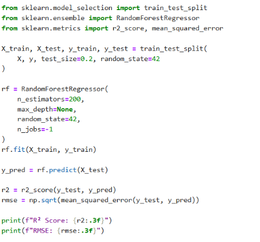
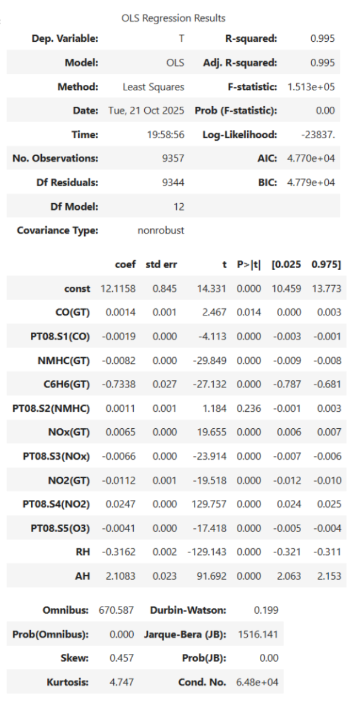
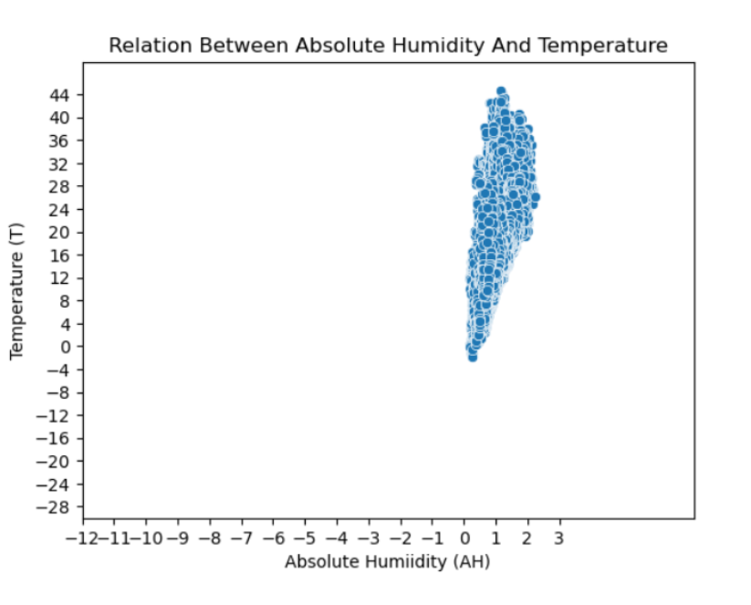
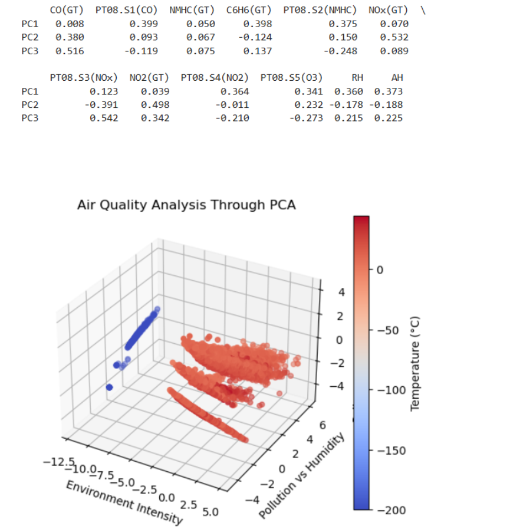
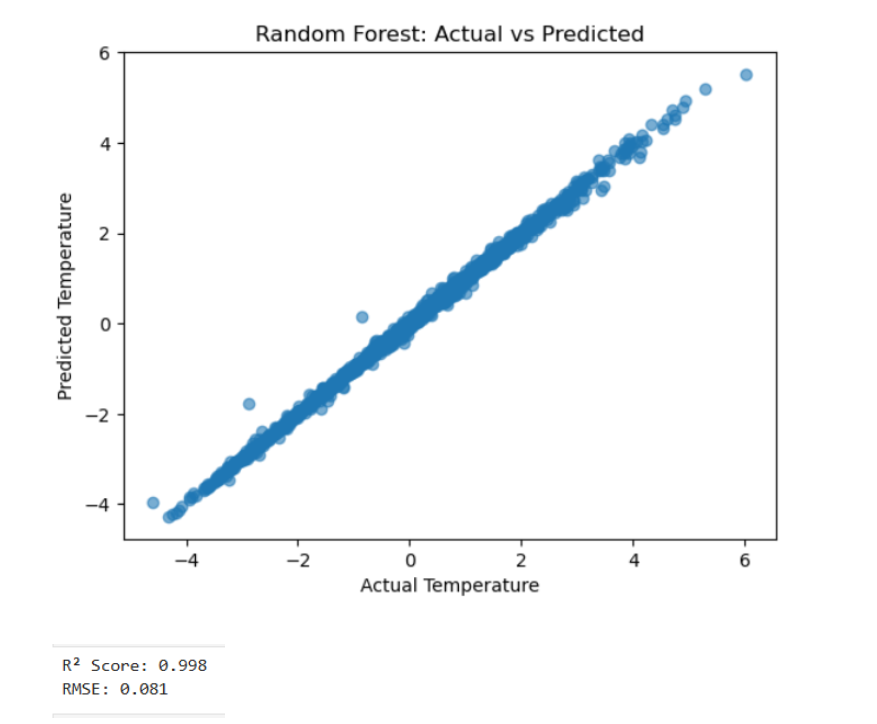

Air Quality Trends | Feburary 2026
Project Overview
Air pollution remains as one of the most persistent public and environmental health issues worldwide. Monitoring air quality effectively and continuously stands vital for understanding pollutant behavior and how to address it through carefully-crafted policies. This project aims to analyze air quality data from a city in Italy between March 2004 and February 2005. The basis of my research, "Air Quality Dataset", includes significant features such as over 9,000 hourly records of sensor readings, time frames key pollutants such as CO, nitrogen oxides, benzene, and more.
Regression & Data Understanding
Regression is a method used to showcase the relationship between two variables. It predicts a numerical result to analyze how significantly said variables are related. Types of regression models used in this project include linear regression and random forest regression in order to identify how exactly environmental factors influence temperature.
Pre-processing
Kagglehub and Pandas imports: Ensures data is loaded and read correctly. Starting out, I...
- Changed data types in order for the information to be viable for machine models
- Significant bits of code in this regard included:
df.columns & df.info()
df = df.drop(columns=["Unnamed: 15", "Unnamed: 16", "Date", "Time"])
for col in df.select_dtypes(include='object').columns: df[col] = pd.to_numeric(df[col], errors='coerce') - Viewed what columns featured in the dataset and determined what data types to remove.
The Statsmodel was then used to conduct staistical tests, including a summary of my Ordinary Least Squares (OLS) regression model. The X variable in this project represented the temperature, and was compared to the y variable which represented every other column remaining in the dataset after data cleaning.
- The code goes as follows:
target = 'T'
X = df.drop(columns=[target])
y = df[target]
X2 = sm.add_constant(X)
est = sm.OLS(y, X2)
est2 = est.fit()
est2.summary()
sklearn: Vital in providing sufficient tools for machine learning models.
- Used to perform random forest regression testing to identify its R-squared value and conduct train test split testing
- My formation of the random forest regression machine model:

Seaborn and matplotlib.plyplot: Specializes in generating graphs and was used to highlight the relationshop between the environment and temperature.
- For my Principal Component Analysis (PCA) findings:
plt.scatter(pca_df[0], pca_df[1], c=y, cmap='viridis') plt.colorbar()
mpl_toolkits.mplot3d: Generates 3D Graphs
- The 3D PCA model set up:
pca = PCA(n_components = 3, random_state = 7)
pca_mdl = pca.fit_transform(x)
pca_df = pd.DataFrame(pca_mdl)
pca_df.head()
Modelling & Evaluation
Experiment 1: Ordinary Least Squares With Linear Regression
Key interpretations:
- When it comes to temperature, absolute humidity has the strongest positive impact.
- To present this visually, I developed a scatterplot showing the relationship between temperature and the pollutant CO2. There is a stark connection between the two when the temperature lies anywhere between -4 to 44 degrees Celsius.
- Pollutants, with NO2 being the most notable, have a minor influence on temperature, likely serving as correlations rather than direct cause and effect.
- The model's R-squared sits at 95%, representing high predictive accuracy.


Experiment 2: PCA
Key interpretations
- Based on the PCA loadings matrix, it is assumed that each axis was grouped be overall enviornmental factors, pollutants, and humidity
- 3D map showcases how each dimension impacts temperature through a blue to red gradient
- Temperature tends to rise as air pollution and humidity increases

Experiment 3: Random Tree Regression
Key interpretations:
- Random forest holds 99% prediction accuracy.
- Handles outliers better compared to linear regression.

Impact & Conclusion
Overall:
- Random forest has the highest predictive accuracy at 99.8%, which stands as a slight improvement from linear regression's 99.5%.
- Linear regression was most specific in values, marking absolute humidity as the main factor impacting temperature.
- Based on PCA, temperature rises as air pollution and humidity increases. Conducting a loadings matrix helped provide more meaning to what PC1, 2, and 3 generally imply.
Impact:
- Pros:
- Original dataset contains at least 9k response values and features a multitude of pollutants
- Environmental scientists, health officials, and city planners would all benefit from this data by studying pollutant behavior and weather correlations in order to develop better environmental policies. Additionally, this could help form enhanced predictive systems for weather, which would in turn benefit immunocompromised individuals in the area.
- Cons:
- Information in the dataset is only limited to a small city in Italy, and does not address how pollutant behavior in different environments/regions.
- No obvious target variable in the dataset.